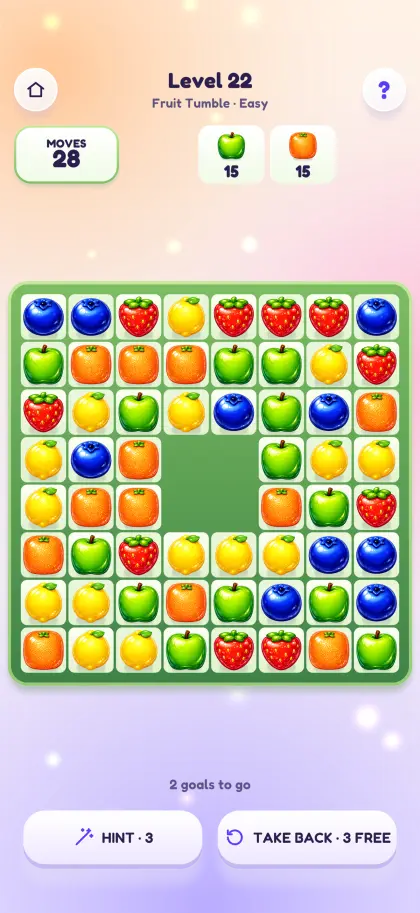

Fruit Tumble: the tap-to-blast fruit game
By the Sultan of Niyyat team, who make Puzzle Jar. Last updated .
Fruit Tumble is the classic tap-to-blast game in Puzzle Jar. Tap two or more touching fruit of the same kind and they pop; the fruit above drops down and new fruit falls in from the top of the crate. Each level sets goals, such as 15 apples and 15 oranges, and a number of moves. Reach every goal before the moves run out and you win. Big groups leave a fizz rocket, a coconut or a blender behind.

On this page: 13 questions
- How do you play Fruit Tumble?
- Does tapping a single fruit waste a move?
- How do you make a fizz rocket, a coconut and a blender?
- What happens when two specials sit side by side?
- How do you win and lose in Fruit Tumble?
- What do ice, jam jars, gaps and nets do?
- How do you get a jam jar down to the bottom?
- What is the best strategy in Fruit Tumble?
- Is the fruit that falls into the crate random?
- Which tap does the Fruit Tumble hint suggest?
- What can I do when I run out of moves in Fruit Tumble?
- What is the difference between Fruit Tumble, Balloon Bunch and Tide Pool?
- Who will enjoy Fruit Tumble?
How do you play Fruit Tumble?#
Tap any group of two or more matching fruit that touch. The whole group pops, everything above it tumbles down to fill the space, and fresh fruit drops in from the top. Each tap that pops something uses one move. The goal counters at the top go down as you collect the fruit they show, and there are six kinds in all: strawberry, blueberry, lemon, apple, orange and plum.
Does tapping a single fruit waste a move?#
No. A fruit with no matching neighbor does nothing when you tap it, and your move count stays where it was. Only a tap that pops a group, or sets off a special, uses a move, so a slip of the finger on a lone fruit costs you nothing.
How do you make a fizz rocket, a coconut and a blender?#
By the size of the group you pop. 5 or 6 fruit leave a fizz rocket on the square you tapped; it clears its row or its column, lying the way the group was longer. 7 or 8 leave a coconut with a lit fuse, which blasts the 8 squares around it. 9 or more make a blender that clears every fruit of its kind. Fruit in a group big enough wears a small badge of the special it would make, so you can see it before you tap.
What happens when two specials sit side by side?#
Tap one and both go off together as a bigger blast. Two rockets fire along a whole row and a whole column at once. A rocket with a coconut clears three rows and three columns. Two coconuts clear a 5x5 square. A blender next to a rocket or coconut turns every fruit of its kind into that special and sets them all off, and two blenders clear the entire crate.
How do you win and lose in Fruit Tumble?#
You win the moment every goal at the top reaches zero, even with moves left over. You lose when the move counter hits zero with a goal still open. Levels give between 14 and 39 moves, and there is no clock, so a slow, thought-out tap is never punished.
What do ice, jam jars, gaps and nets do?#
They are the obstacles, added one at a time. Ice blocks (from level 4) break when you pop fruit right next to them; frosted ice with a steel band (from level 20) takes two hits. Jam jars (level 8) have to be brought down to the bottom row. Gaps (level 11) are holes in the crate where no fruit can sit. Netted fruit (level 14) can't be tapped or grouped until a fruit beside it pops and cuts the net.
How do you get a jam jar down to the bottom?#
Empty the squares underneath it. A jar only drops when the fruit below it is gone, so pop groups in the jar's own column, as low as you can, rather than groups next to it. Specials are safe to use here: blasts never break a jar, so a rocket running up the jar's column clears its path in one move.
What is the best strategy in Fruit Tumble?#
Spend moves on the goals, and grow groups before you pop them. Popping a pair of a fruit you don't need often breaks up a bigger group that would have made a special. Look for taps that will make two groups of the same fruit fall together. Our careful computer test player, which only looks two taps ahead, uses about half of a level's moves, so a little planning goes a long way.
Is the fruit that falls into the crate random?#
No, it is fixed for each level. The same tap on the same board always brings in the same fruit, so a level plays the same way every time you retry it, and nothing changes against you when you are close to winning. When no group is left, the fruit is mixed, and that is also the same every time. Our tests replay a saved winning line of taps for every level to prove it can be won with no help.
Which tap does the Fruit Tumble hint suggest?#
The tap our careful player would choose. It plays every possible tap two taps ahead, already knowing which fruit will fall in, and picks the one that does most for the goals. If you just pause for 6 seconds, the biggest group on the board starts to glow for free, without using a hint.
What can I do when I run out of moves in Fruit Tumble?#
Take a rescue: 5 more moves, up to twice on a level. A video you opt into can pay for the first one on a level; the second uses a rescue from your shared count. You can also take back your last tap and get its move back (three take backs are free on each level), try the level again, or go home.
What is the difference between Fruit Tumble, Balloon Bunch and Tide Pool?#
All three are tap-to-blast games where two or more touching pieces of one kind pop, but each moves differently.
- Fruit Tumble is the classic grid: fruit falls down, new fruit drops in from the top, and you have a set number of moves.
- Balloon Bunch turns gravity upside down: loose balloons float up, drift and bump, and fireworks join together when they touch. It also has a move limit.
- Tide Pool drops nothing in from the top. Every few taps the tide pushes a new row up from the bottom, and you lose by letting the pool overflow, not by running out of moves.
Who will enjoy Fruit Tumble?#
If you have played any collapse or blast puzzle where you tap groups of the same color, you will know the rules after one tap. It suits players who want quick, colorful levels with a bit of planning, rather than long thinking puzzles. Our version has no lives to wait for, and the hard levels are hard because of the board, not because the falling fruit turns against you.